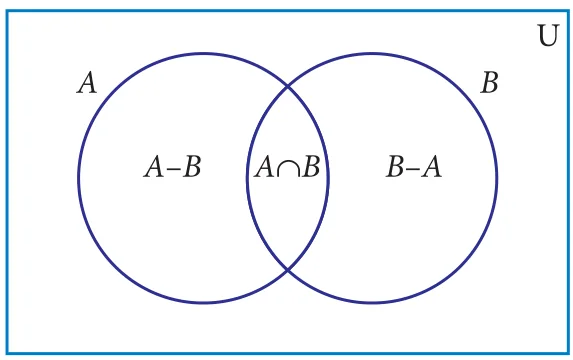
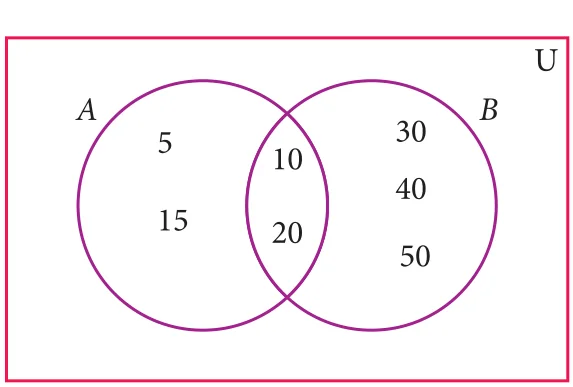
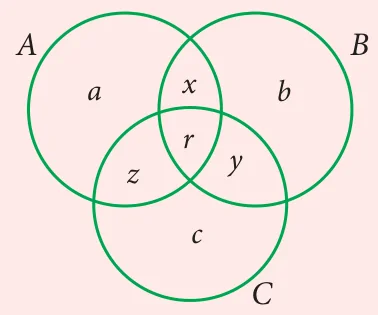
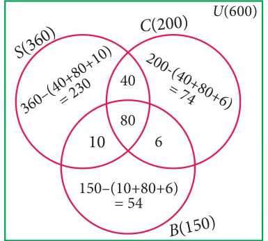
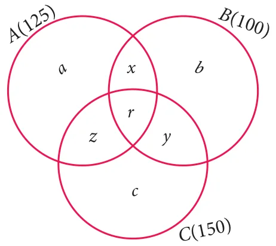

We have learnt about the union, intersection, complement and difference of sets. Now we will go through some practical problems on sets related to everyday life.
Results:

If A and B are two finite sets, then
- \(n(A \cup B) = n(A) + n(B) - n(A \cap B)\)
- \(n(A - B) = n(A) - n(A \cap B)\)
- \(n(B - A) = n(B) - n(A \cap B)\)
- \(n(A') = n(U) - n(A)\)
Note
From the above results we may get,
- \(n(A \cap B) = n(A) + n(B) - n(A \cup B)\)
- \(n(U) = n(A) + n(A')\)
- If A and B are disjoint sets then, \(n(A \cup B) = n(A) + n(B)\).
Example 1.27
From the Venn diagram, verify that \(n(A \cup B) = n(A) + n(B) - n(A \cap B)\)
Solution

From the venn diagram,
\(A = \{5, 10, 15, 20\}\)
\(B = \{10, 20, 30, 40, 50,\}\)
Then \(A \cup B = \{5, 10, 15, 20, 30, 40, 50\}\)
\(A \cap B = \{10, 20\}\)
\(n(A) = 4\), \(n(B) = 5\), \(n(A \cup B) = 7\), \(n(A \cap B) = 2\)
\(n(A \cup B) = 7\) \(\rightarrow\) (1)
\(n(A) + n(B) - n(A \cap B) = 4 + 5 - 2\)
\(= 7\) \(\rightarrow\) (2)
From (1) and (2), \(n(A \cup B) = n(A) + n(B) - n(A \cap B)\).
Example 1.28
If \(n(A) = 36\), \(n(B) = 10\), \(n(A \cup B) = 40\), and \(n(A') = 27\) find \(n(U)\) and \(n(A \cap B)\).
Solution
\(n(A) = 36\), \(n(B) = 10\), \(n(A \cup B) = 40\), \(n(A') = 27\)
- \(n(U) = n(A) + n(A') = 36 + 27 = 63\)
- \(n(A \cap B) = n(A) + n(B) - n(A \cup B) = 36 + 10 - 40 = 46 - 40 = 6\)
Activity-4
Fill in the blanks with appropriate cardinal numbers.
| S.No. | \(n(A)\) | \(n(B)\) | \(n(A \cup B)\) | \(n(A \cap B)\) | \(n(A - B)\) | \(n(B - A)\) |
|---|---|---|---|---|---|---|
| 1 | 30 | 45 | 65 | |||
| 2 | 20 | 55 | 10 | |||
| 3 | 50 | 65 | 25 | |||
| 4 | 30 | 43 | 70 |
Example 1.29
Let \(A = \{b, d, e, g, h\}\) and \(B = \{a, e, c, h\}\). Verify that \(n(A - B) = n(A) - n(A \cap B)\).
Solution
\(A = \{b, d, e, g, h\}\), \(B = \{a, e, c, h\}\)
\(A - B = \{b, d, g\}\)
\(n(A - B) = 3\) ... (1)
\(A \cap B = \{e, h\}\)
\(n(A \cap B) = 2\), \(n(A) = 5\)
\(n(A) - n(A \cap B) = 5 - 2\)
\(= 3\) ... (2)
Form (1) and (2) we get \(n(A - B) = n(A) - n(A \cap B)\).
Example 1.30
In a school, all students play either Hockey or Cricket or both. 300 play Hockey, 250 play Cricket and 110 play both games. Find
- the number of students who play only Hockey.
- the number of students who play only Cricket.
- the total number of students in the School.
Solution:
Let H be the set of all students who play Hockey and C be the set of all students who play Cricket.

Then \(n(H) = 300\), \(n(C) = 250\) and \(n(H \cap C) = 110\)
Using Venn diagram,
From the Venn diagram,
- The number of students who play only Hockey \(= 190\)
- The number of students who play only Cricket \(= 140\)
- The total number of students in the school \(= 190 + 110 + 140 = 440\)
Aliter
-
The number of students who play only Hockey
\(n(H - C) = n(H) - n(H \cap C)\)
\(= 300 - 110 = 190\)
-
The number of students who play only Cricket
\(n(C - H) = n(C) - n(H \cap C)\)
\(= 250 - 110 = 140\)
-
The total number of students in the school
\(n(H \cup C) = n(H) + n(C) - n(H \cap C)\)
\(= 300 + 250 - 110 = 440\)

Example 1.31
In a party of 60 people, 35 had Vanilla ice cream, 30 had Chocolate ice cream. All the people had at least one ice cream. Then how many of them had,
- both Vanilla and Chocolate ice cream.
- only Vanilla ice cream.
- only Chocolate ice cream.
Solution:
Let V be the set of people who had Vanilla ice cream and C be the set of people who had Chocolate ice cream.
Then \(n(V) = 35\), \(n(C) = 30\), \(n(V \cup C) = 60\),
Let x be the number of people who had both ice creams.

From the Venn diagram
\(35 - x + x + 30 - x = 60\)
\(65 - x = 60\)
\(x = 5\)
Hence 5 people had both ice creams.
- Number of people who had only Vanilla ice cream \(= 35 - x = 35 - 5 = 30\)
- Number of people who had only Chocolate ice cream \(= 30 - x = 30 - 5 = 25\)
We have learnt to solve problems involving two sets using the formula \(n(A \cup B) = n(A) + n(B) - n(A \cap B)\). Suppose we have three sets, we can apply this formula to get a similar formula for three sets.
For any three finite sets A, B and C
\(n(A \cup B \cup C) = n(A) + n(B) + n(C) - n(A \cap B) - n(B \cap C) - n(A \cap C) + n(A \cap B \cap C)\)
Note
Let us consider the following results which will be useful in solving problems using Venn diagram. Let three sets A, B and C represent the students. From the Venn diagram,

Number of students in only set \(A = a\), only set \(B = b\), only set \(C = c\).
- Total number of students in only one set \(= (a + b + c)\)
- Total number of students in only two sets \(= (x + y + z)\)
- Number of students exactly in three sets \(= r\)
- Total number of students in atleast two sets (two or more sets) \(= x + y + z + r\)
- Total number of students in 3 sets \(= (a + b + c + x + y + z + r)\)
Example 1.32
In a college, 240 students play cricket, 180 students play football, 164 students play hockey, 42 play both cricket and football, 38 play both football and hockey, 40 play both cricket and hockey and 16 play all the three games. If each student participate in atleast one game, then find (i) the number of students in the college (ii) the number of students who play only one game.
Solution
Let C, F and H represent sets of students who play Cricket, Football and Hockey respectively.

Then, \(n(C) = 240\), \(n(F) = 180\), \(n(H) = 164\), \(n(C \cap F) = 42\),
\(n(F \cap H) = 38\), \(n(C \cap H) = 40\), \(n(C \cap F \cap H) = 16\).
Let us represent the given data in a Venn diagram.
(i) The number of students in the college
\(= 174 + 26 + 116 + 22 + 102 + 24 + 16 = 480\)
(ii) The number of students who play only one game
\(= 174 + 116 + 102 = 392\)
Example 1.33
In a residential area with 600 families \(\frac{3}{5}\) owned scooter, \(\frac{1}{3}\) owned car, \(\frac{1}{4}\) owned bicycle, 120 families owned scooter and car, 86 owned car and bicylce while 90 families owned scooter and bicylce. If \(\frac{2}{15}\) of families owned all the three types of vehicles, then find (i) the number of families owned atleast two types of vehicle. (ii) the number of families owned no vehicle.
Solution
Let S, C and B represent sets of families who owned Scooter, Car and Bicycle respectively.

Given, \(n(U) = 600\) \(n(S) = \frac{3}{5} \times 600 = 360\)
\(n(C) = \frac{1}{3} \times 600 = 200\) \(n(B) = \frac{1}{4} \times 600 = 150\)
\(n(S \cap C \cap B) = \frac{2}{15} \times 600 = 80\)
From Venn diagram,
- The number of families owned atleast two types of vehicles \(= 40 + 6 + 10 + 80 = 136\)
-
The number of families owned no vehicle
\(= 600 -\) (owned atleast one vehicle)
\(= 600 - (230 + 40 + 74 + 6 + 54 + 10 + 80)\)
\(= 600 - 494 = 106\)
Example 1.34
In a group of 100 students, 85 students speak Tamil, 40 students speak English, 20 students speak French, 32 speak Tamil and English, 13 speak English and French and 10 speak Tamil and French. If each student knows atleast any one of these languages, then find the number of students who speak all these three languages.
Solution
Let A, B and C represent sets of students who speak Tamil, English and French respectively.
Given, \(n(A \cup B \cup C) = 100\), \(n(A) = 85\), \(n(B) = 40\), \(n(C) = 20\),
\(n(A \cap B) = 32\), \(n(B \cap C) = 13\), \(n(A \cap C) = 10\).
We know that,
\(n(A \cup B \cup C) = n(A) + n(B) + n(C) - n(A \cap B) - n(B \cap C) - n(A \cap C) + n(A \cap B \cap C)\)
\(100 = 85 + 40 + 20 - 32 - 13 - 10 + n(A \cap B \cap C)\)
Then, \(n(A \cap B \cap C) = 100 - 90 = 10\)
Therefore, 10 students speak all the three languages.
Example 1.35
A survey was conducted among 200 magazine subscribers of three different magazines A, B and C. It was found that 75 members do not subscribe magazine A, 100 members do not subscribe magazine B, 50 members do not subscribe magazine C and 125 subscribe atleast two of the three magazines. Find
- Number of members who subscribe exactly two magazines.
- Number of members who subscribe only one magazine.
Solution

Total number of subscribers \(= 200\)
| Magazine | Do not subscribe | Subscribe |
|---|---|---|
| A | 75 | 125 |
| B | 100 | 100 |
| C | 50 | 150 |
From the Venn diagram,
Number of members who subscribe only one magazine \(= a + b + c\)
Number of members who subscribe exactly two magazines \(= x + y + z\)
and 125 members subscribe atleast two magazines.
That is, \(x + y + z + r = 125\) ... (1)
Now, \(n(A \cup B \cup C) = 200\), \(n(A) = 125\), \(n(B) = 100\), \(n(C) = 150\), \(n(A \cap B) = x + r\)
\(n(B \cap C) = y + r\), \(n(A \cap C) = z + r\), \(n(A \cap B \cap C) = r\)
We know that,
\(n(A \cup B \cup C) = n(A) + n(B) + n(C) - n(A \cap B) - n(B \cap C) - n(A \cap C) + n(A \cap B \cap C)\)
\(200 = 125 + 100 + 150 - x - r - y - r - z - r + r\)
\(= 375 - (x + y + z + r) - r\)
\(= 375 - 125 - r\) \(\left[\because\ x + y + z + r = 125\right]\)
\(200 = 250 - r\) \(\Rightarrow r = 50\)
From (1) \(x + y + z + 50 = 125\)
We get, \(x + y + z = 75\)
Therefore, number of members who subscribe exactly two magazines \(= 75\).
From Venn diagram,
\((a + b + c) + (x + y + z + r) = 200\) ... (2)
substitute (1) in (2),
\(a + b + c + 125 = 200\)
\(a + b + c = 75\)
Therefore, number of members who subscribe only one magazine \(= 75\).